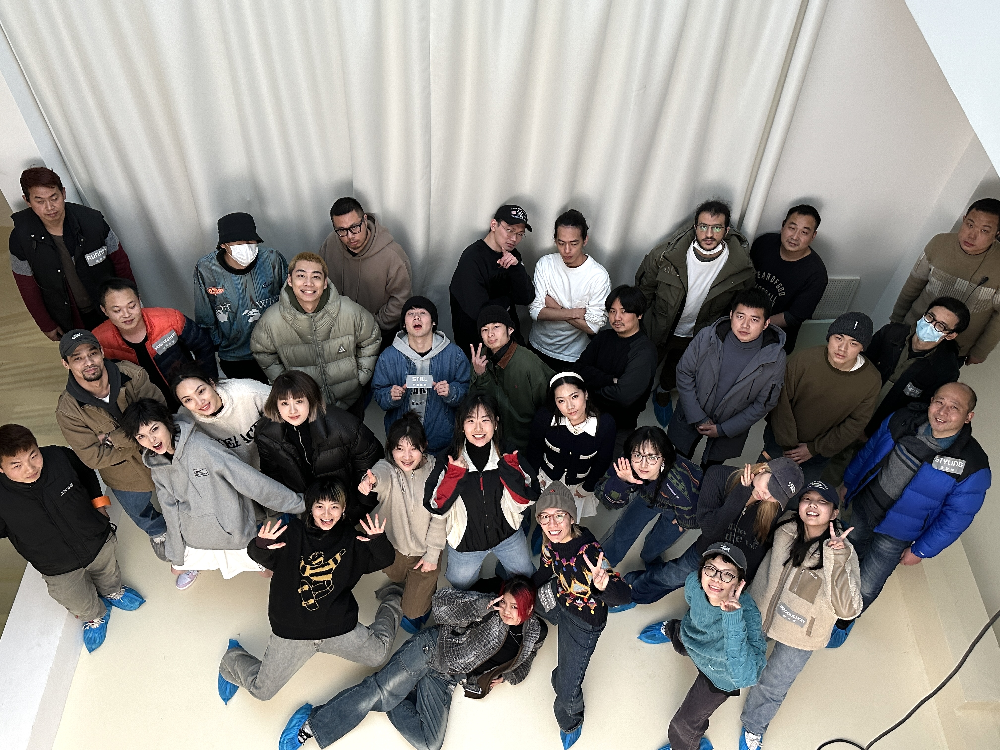

Nike IWD 2023
A series of short-form videos created for International Women's Day, using a fitness-driven narrative to inspire women to feel confident and empowered in sport and everyday life while highlighting holistic product solutions.
I contributed from initial concept to final cut, across art direction, shooting and post-production.
Production with Dining Room.
BEHIND THE SCENE
